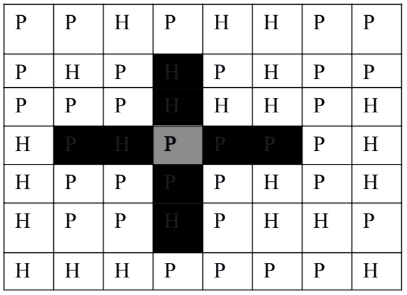

司令部的将军们打算在N*M的网格地图上部署他们的炮兵部队。一个N*M的地图由N行M列组成，地图的每一格可能是山地（用“H” 表示），也可能是平原（用“P”表示），如下图。在每一格平原地形上最多可以布置一支炮兵部队（山地上不能够部署炮兵部队）；一支炮兵部队在地图上的攻击范围如图中黑色区域所示：

如果在地图中的灰色所标识的平原上部署一支炮兵部队，则图中的黑色的网格表示它能够攻击到的区域：沿横向左右各两格，沿纵向上下各两格。图上其它白色网格均攻击不到。从图上可见炮兵的攻击范围不受地形的影响。
现在，将军们规划如何部署炮兵部队，在防止误伤的前提下（保证任何两支炮兵部队之间不能互相攻击，即任何一支炮兵部队都不在其他支炮兵部队的攻击范围内），在整个地图区域内最多能够摆放多少我军的炮兵部队。
第一行包含两个由空格分割开的正整数，分别表示N和M；
接下来的N行，每一行含有连续的M个字符（‘P’或者‘H’），中间没有空格。按顺序表示地图中每一行的数据。
$N≤100；M≤10$。
仅在第一行包含一个整数K，表示最多能摆放的炮兵部队的数量。
5 4 PHPP PPHH PPPP PHPP PHHP
6
 Comet OJ
Comet OJ